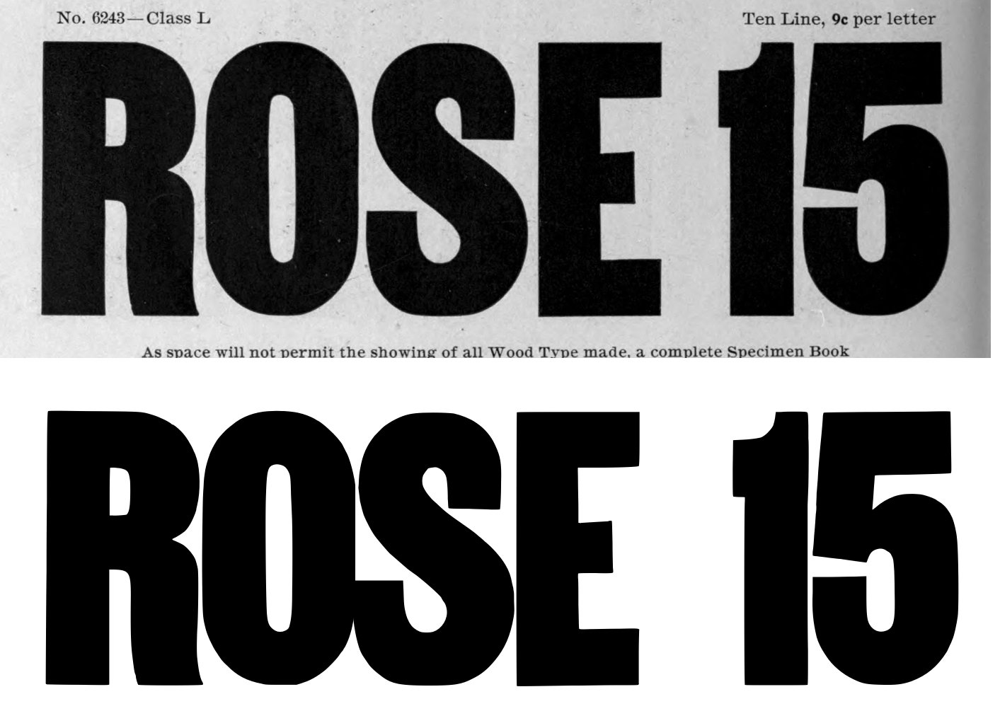
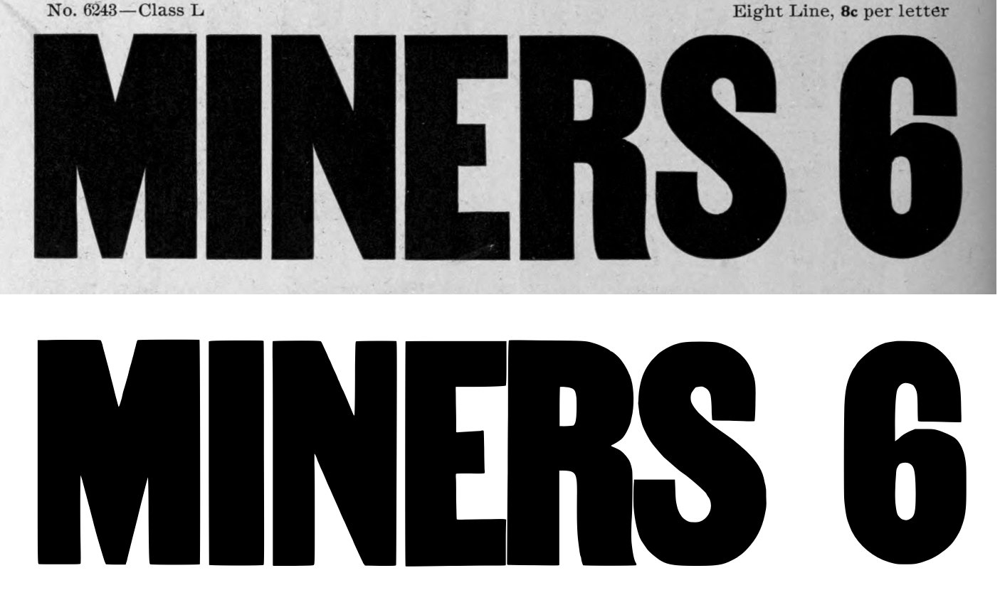
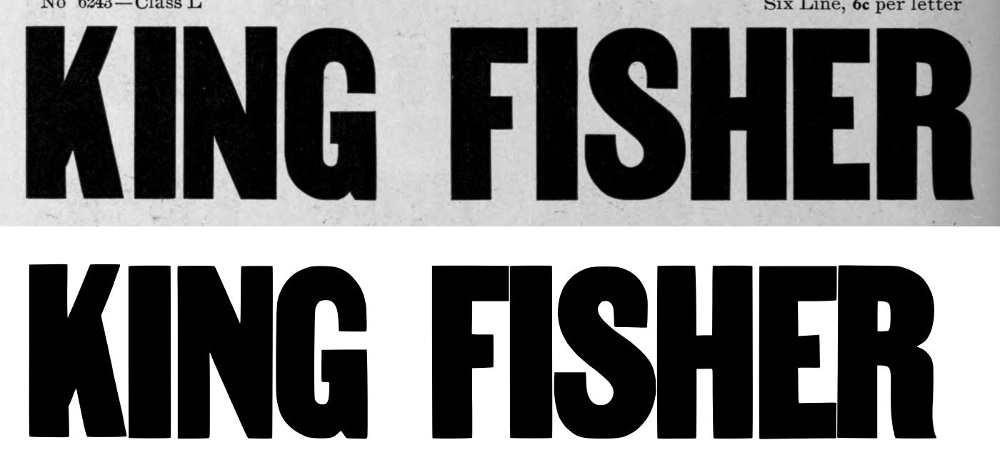
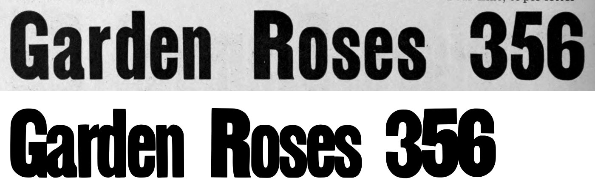
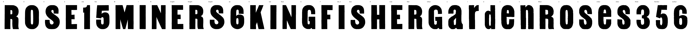

Gray letters are constructed, not traced.


0 warnings, 1 notes.
[
{
"level": "info",
"check": "specks",
"glyph": "R.four",
"value": 1,
"note": "marks beside the letter were recorded, not cut"
}
]
{
"896:ten": {
"n_caps": 4,
"cap_height_px": 665.0,
"cap_source": "caps",
"baseline_px": 3424.5,
"baselines": {
"6": 3424.5
},
"glyphs": [
"R",
"O",
"S",
"E",
"one",
"five"
],
"figure_height_px": 664.0,
"stem_px": 151.0,
"scale": 1.05263,
"stem_units": 158.9,
"figure_height": 699
},
"896:eight": {
"n_caps": 6,
"cap_height_px": 534.0,
"cap_source": "caps",
"baseline_px": 2593.0,
"baselines": {
"5": 2593.0
},
"glyphs": [
"M",
"I",
"N",
"E.eight",
"R.eight",
"S.eight",
"six"
],
"figure_height_px": 530,
"stem_px": 112.5,
"scale": 1.31086,
"stem_units": 147.5,
"figure_height": 695
},
"896:six": {
"n_caps": 10,
"cap_height_px": 401.0,
"cap_source": "caps",
"baseline_px": 1898.0,
"baselines": {
"4": 1898.0
},
"glyphs": [
"K",
"I.six",
"N.six",
"G",
"F",
"I.six_2",
"S.six",
"H",
"E.six",
"R.six"
],
"stem_px": 90.0,
"scale": 1.74564,
"stem_units": 157.1
},
"896:four": {
"n_caps": 2,
"cap_height_px": 266.5,
"cap_source": "caps",
"baseline_px": 860.0,
"baselines": {
"2": 860.0
},
"glyphs": [
"G.four",
"a",
"r",
"d",
"e",
"n",
"R.four",
"o",
"s",
"e.four",
"s.four",
"three",
"five.four",
"six.four"
],
"x_height_px": 204,
"figure_height_px": 265,
"stem_px": 55.0,
"scale": 2.62664,
"stem_units": 144.5,
"x_height": 536,
"figure_height": 696
}
}
{
"archive_id": "bookoftypespecim00barnrich",
"title": "Book of type specimens. Comprising a large variety of superior copper-mixed types, rules, borders, galleys, printing presses, electric-welded chases, paper and card cutters, wood goods, book binding machinery etc., together with valuable information to the craft. Specimen book no.9",
"creator": [
"Barnhart, bros. & Spindler, firm, type founders, Chicago",
"De Young family",
"De Young, Charles, 1881-"
],
"publisher": "Chicago, Barnhart bros. & Spindler",
"date": "[1907]",
"ppi": 400,
"url": "https://archive.org/details/bookoftypespecim00barnrich",
"copyright_status": "NOT_IN_COPYRIGHT",
"contributor": "University of California Libraries",
"leaves": [
896
]
}